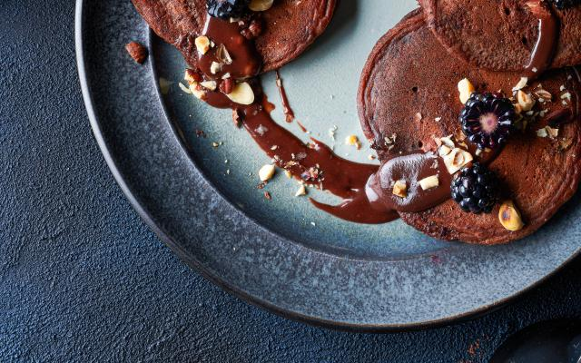

Chocoladecrepes
Deze crepes zijn het perfecte toetje voor chocoladeliefhebbers.
Ingredienten
- 120 gram hazelnoten
- 30 gram boter
- 2 eieren
- 60 gram suiker
- 200 mililiter volle melk
- 130 gram bloem
- 1.5 kilo bakpoeder
- 25 gram cacaopoeder
- 80 gram chocoladedruppels
- plantaardige olie
- braambessen
- zout
- 80 gram hazelnootpasta
- 2 eetlepels melk
Bereidingswijze
- Rooster de hazelnoten in een pan zonder vetstof. Schep ze op een keukenhanddoek en wrijf de velletjes van de hazelnoten. Bewaar 40 g hazelnoten en maal 80 g hazelnoten heel fijn.
- Smelt de boter. Klop de eieren op met de suiker, een snuifje zout en de melk. Voeg de bloem, het bakpoeder, de gemalen hazelnoten en het cacaopoeder toe en klop kort tot een egaal beslag. Voeg ook de gesmolten boter en de chocoladedruppels toe.
- Warm in een pan met antiaanbaklaag een scheutje plantaardige olie op en bak er 3 à 4 kleine pancakes in. Bak elke kant ongeveer 2 minuten op middelhoog vuur. Bak zo verder tot het beslag op is.
- Druk het mengsel in een cakevorm en bak deze ongeveer 1 uur in de oven.
- Warm de hazelnootpasta en 2 eetlepels melk kort op in de microgolfoven of in een pannetje en serveer de pancakes met de saus en de overige hazelnoten. Lekker met braambessen.

Tip! Je mag zoveel verschillende soorten fruit toevoegen als gewenst.